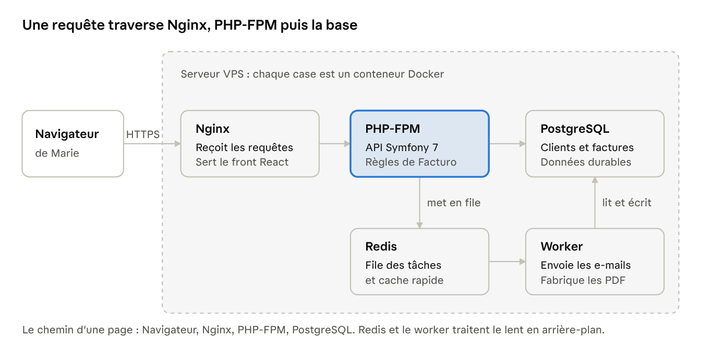
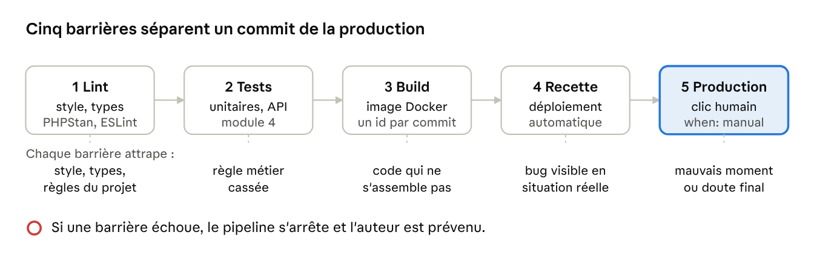
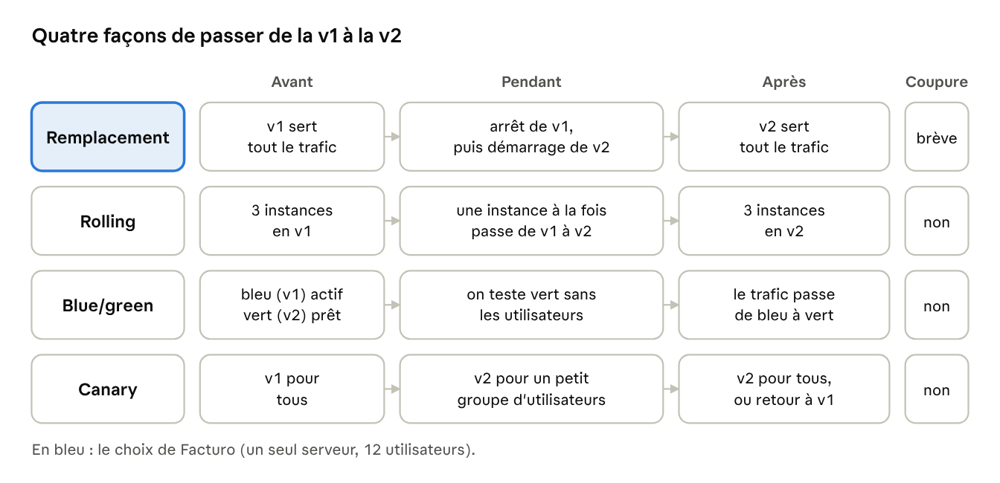
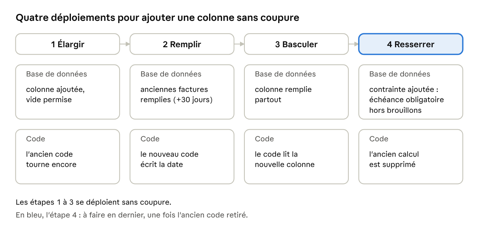

Module 5 : serveur, mise en ligne, DevOps et CI/CD
Ce que vous saurez faire
Ce module explique comment un code devient une application accessible, et comment la mettre à jour sans stress ni coupure. Vous n'avez pas besoin de devenir administrateur système. Vous devez comprendre assez pour juger ce qu'un agent propose et pour poser les bonnes questions.
À la fin du module, vous saurez :
- décrire le trajet d'une requête de Facturo, du navigateur jusqu'à la base de données ;
- lire un Dockerfile et un docker-compose.yml, et dire ce que fait chaque ligne ;
- lire un pipeline GitLab CI et dire quelles barrières protègent la production ;
- choisir une stratégie de déploiement (remplacement, rolling, blue/green, canary) selon le risque ;
- faire évoluer une base de données sans coupure grâce à la méthode expand / contract ;
- restaurer une sauvegarde et mesurer le temps que cela prend.
Prérequis : modules 1, 3 et 4 (requête HTTP, architecture, tests). Durée : 14 heures environ, sur deux semaines.
Lien avec Facturo : l'application tourne sur un serveur loué, dans des conteneurs. Chaque modification de code doit arriver en production sans interrompre Marie en pleine émission de facture, et sans jamais perdre ses données.
Leçon 5.1 : ce qu'il y a derrière l'adresse web
Un serveur est un ordinateur toujours allumé et relié à Internet, qui répond aux demandes des navigateurs. Pour Facturo, c'est un VPS : un serveur virtuel loué chez un hébergeur, avec un système Linux, que l'on administre à distance par SSH (une connexion chiffrée en ligne de commande).
Pensez à un restaurant. Nginx est l'accueil : il reçoit chaque client et l'oriente. PHP-FPM est la cuisine : il prépare la réponse en appliquant les règles de Facturo. PostgreSQL est la réserve, où tout est rangé durablement. Redis est le passe-plat, où l'on dépose les commandes à traiter. Le worker est l'employé en arrière-salle qui s'occupe de ces commandes sans faire attendre le client (envoyer un e-mail, fabriquer un PDF).
| Composant | Rôle | Exemple dans Facturo |
|---|---|---|
| Nginx | Reçoit les requêtes HTTPS, sert les fichiers du front, transmet le reste | Affiche l'application React, renvoie /api/... vers PHP |
| PHP-FPM | Exécute le code de l'API | Crée une facture, applique la TVA |
| PostgreSQL | Stocke les données de façon durable | Clients, factures, avoirs |
| Redis | Mémoire rapide : cache et file d'attente | Liste des e-mails de rappel à envoyer |
| Worker | Traite les tâches en arrière-plan | Envoie le rappel d'impayé, génère le PDF |
Quand Marie ouvre https://facturo.example, voici ce qui se passe en quelques centièmes de seconde. Le nom est converti en adresse du serveur par le DNS. Le navigateur ouvre une connexion chiffrée (HTTPS) vers Nginx. Nginx sert la page React. Cette page demande ensuite ses données à l'API, et Nginx transmet cet appel à PHP-FPM, qui interroge PostgreSQL.

Lire le schéma
- Le navigateur de Marie parle à Nginx, la seule porte ouverte sur Internet.
- Nginx transmet les appels d'API à PHP-FPM (en bleu, c'est là que vit le code de Facturo).
- PHP-FPM lit et écrit les données dans PostgreSQL.
- Les tâches lentes passent par Redis : le worker les traite sans faire attendre Marie.
Pour vérifier qu'un serveur est en bonne santé, trois commandes suffisent à un non-spécialiste.
$ ssh deploy@facturo.example # se connecter au serveur
$ docker compose ps # quels conteneurs tournent ?
NAME SERVICE STATUS
web nginx Up 3 days
api php Up 3 days
db postgres Up 3 days (healthy)
cache redis Up 3 days
worker php Up 3 days
$ curl -I https://facturo.example/api/health # l'API répond-elle ?
HTTP/2 200Un 200 dit que l'API répond. Un 502 (mauvaise passerelle) dit que Nginx est vivant mais ne joint plus PHP : le problème est derrière. Un 503 dit que le service est indisponible. Ce vocabulaire (module 1) suffit souvent à situer une panne en une minute.
À retenir
- Une requête traverse une chaîne : Nginx, PHP-FPM, la base. Une panne se situe à un maillon.
- Redis et le worker sortent du chemin du client les tâches lentes.
-
docker compose psetcurl -Idonnent un premier diagnostic en deux commandes.
Erreurs fréquentes
- Confondre « le site est lent » et « le serveur est en panne » : ce sont des maillons différents.
- Ouvrir la base de données à tout Internet pour « simplifier » (module 6).
Leçon 5.2 : mettre l'application dans des conteneurs
Sans conteneur, installer Facturo sur un serveur ressemble à une recette où l'on devrait recréer sa cuisine à chaque fois : bonne version de PHP, bonnes extensions, bonne configuration. Un conteneur emballe l'application avec tout ce dont elle a besoin. Il tourne de la même façon sur l'ordinateur du développeur, sur la recette et en production. Le « ça marche chez moi » disparaît.
Deux fichiers décrivent cet emballage. Le Dockerfile est la recette d'une image (un modèle figé de l'application). Le docker-compose.yml décrit comment faire tourner ensemble plusieurs conteneurs : l'API, la base, Redis, le worker.
Le Dockerfile de l'API
FROM php:8.3-fpm-alpine AS base
RUN docker-php-ext-install pdo_pgsql opcache
WORKDIR /app
FROM base AS vendor
COPY composer.json composer.lock ./
RUN composer install --no-dev --no-scripts --prefer-dist
FROM base AS final
COPY --from=vendor /app/vendor ./vendor
COPY . .
RUN adduser -D appuser && chown -R appuser /app
USER appuser
HEALTHCHECK --interval=30s CMD php-fpm-healthcheck || exit 1Lecture ligne à ligne :
-
FROM php:8.3-fpm-alpine: on part d'une image officielle PHP 8.3 avec PHP-FPM, dans une version légère (Alpine). -
RUN docker-php-ext-install ...: on ajoute les extensions dont Facturo a besoin pour parler à PostgreSQL. -
Les trois blocs
FROMforment un build en plusieurs étapes : les dépendances sont installées dans une étape, puis seul le résultat est copié dans l'image finale. L'image est plus petite et ne contient pas les outils de développement. -
--no-dev: les outils de test ne partent pas en production. -
USER appuser: l'application tourne avec un utilisateur sans pouvoirs, pas en administrateur. Si quelqu'un exploite une faille, il hérite de droits limités.
Le docker-compose.yml
services:
web:
image: nginx:1.27-alpine
ports: ["443:443"]
depends_on: [api]
volumes: ["./nginx.conf:/etc/nginx/conf.d/default.conf:ro"]
api:
image: registry.example/facturo/api:${TAG}
env_file: .env
depends_on:
db: { condition: service_healthy }
cache: { condition: service_started }
worker:
image: registry.example/facturo/api:${TAG}
command: php bin/console messenger:consume async
env_file: .env
depends_on: [db, cache]
db:
image: postgres:16-alpine
environment:
POSTGRES_PASSWORD_FILE: /run/secrets/db_password
volumes: ["pgdata:/var/lib/postgresql/data"]
healthcheck:
test: ["CMD", "pg_isready", "-U", "postgres"]
interval: 10s
cache:
image: redis:7-alpine
volumes:
pgdata:Ce qu'il faut savoir lire dans ce fichier :
-
ports : seul
web(Nginx) expose un port vers Internet. La base et Redis n'ont aucunports: ils ne sont joignables que par les autres conteneurs. C'est un réglage de sécurité capital. -
volumes :
pgdatagarde les données de la base en dehors du conteneur. Un conteneur est jetable, les données non. Sans ce volume, remplacer le conteneur effacerait toutes les factures. - depends_on + healthcheck : l'API attend que la base soit réellement prête, pas seulement démarrée.
-
Une seule image, deux rôles :
apietworkerutilisent la même image avec une commande différente. -
Les secrets : le mot de passe est lu depuis un fichier ou un fichier
.envqui n'est jamais dans Git. Voir la leçon 5.7.
Exercice de lecture rapide. Que se passe-t-il si quelqu'un ajoute ports: ["5432:5432"] au service db ? La base devient accessible depuis Internet. C'est exactement le genre de modification qu'un agent peut proposer « pour faciliter le débogage ». Vous la refusez.
À retenir
- Un conteneur est jetable, les données vivent dans des volumes.
- Une seule porte ouverte sur Internet : Nginx.
- Test à faire devant tout fichier Compose : quels ports sont exposés, où sont les volumes, d'où viennent les secrets ?
Erreurs fréquentes
-
Utiliser l'étiquette
latestpour une image : on ne sait plus quelle version tourne. - Mettre un mot de passe en clair dans le fichier Compose ou dans l'image.
- Oublier le volume de la base, et perdre les données au premier redéploiement.
Leçon 5.3 : le pipeline CI/CD, une chaîne de barrières
La CI (intégration continue) vérifie automatiquement chaque modification. Le CD (livraison ou déploiement continu) l'envoie ensuite vers les serveurs. Ensemble, ils forment un pipeline : une chaîne d'étapes où chaque étape est une barrière. Si une barrière échoue, la modification ne passe pas.
Pour vous, orchestrateur, le pipeline est l'endroit où les règles de qualité deviennent automatiques. Un agent peut oublier une consigne ; le pipeline, lui, ne se fatigue pas.
Le fichier .gitlab-ci.yml de Facturo
stages: [lint, test, build, recette, production]
lint:
stage: lint
script:
- composer phpstan
- composer cs-check
- npm run lint
tests:
stage: test
script:
- composer test
- npm test
coverage: '/Lines:\s+(\d+\.\d+)%/'
build-image:
stage: build
script:
- docker build -t registry.example/facturo/api:$CI_COMMIT_SHORT_SHA .
- docker push registry.example/facturo/api:$CI_COMMIT_SHORT_SHA
rules:
- if: $CI_COMMIT_BRANCH == "main"
deploy-recette:
stage: recette
script: ./deploy.sh recette $CI_COMMIT_SHORT_SHA
environment: recette
rules:
- if: $CI_COMMIT_BRANCH == "main"
deploy-production:
stage: production
script: ./deploy.sh production $CI_COMMIT_SHORT_SHA
environment: production
when: manual
rules:
- if: $CI_COMMIT_BRANCH == "main"Ce qu'il faut y lire :
- stages : l'ordre des étapes. Une étape ne démarre que si la précédente a réussi.
- lint puis tests : analyse statique et tests du module 4. Si un test casse, rien ne part plus loin.
- build-image : fabrique l'image Docker, étiquetée avec l'identifiant du commit. On sait ainsi exactement quel code tourne.
- deploy-recette : déploiement automatique sur un environnement de répétition, identique à la production.
-
deploy-production avec
when: manual: un humain doit cliquer. C'est votre barrière : vous décidez du moment, après avoir regardé la recette. Avecwhen: manual, GitLab considère par défaut qu'un job manuel non lancé ne bloque pas le pipeline (allow_failurevauttruepar défaut). -
rules : seule la branche
mainva jusqu'au déploiement. La variable$CI_COMMIT_BRANCHn'existe pas dans les pipelines de merge request : la règle ne s'y déclenche donc pas.

Lisez le schéma de gauche à droite : une modification franchit chaque barrière dans l'ordre. Sous chaque barrière, la famille d'erreurs qu'elle arrête. Seule la dernière, en bleu, dépend d'un humain.
À retenir
- Chaque barrière protège contre une famille d'erreurs : style, logique, assemblage, comportement réel, décision humaine.
- La production se déploie par un clic humain, jamais par un agent seul.
- Un pipeline qui laisse passer des tests rouges, ou dont les contrôles sont désactivés, ne protège plus rien.
Erreurs fréquentes
-
Ajouter
allow_failure: trueà une étape pour « débloquer » le pipeline : la barrière devient décorative. - Déployer directement en production sans passer par la recette.
-
Étiqueter les images
latest: impossible de revenir à la version précédente.
Leçon 5.4 : choisir comment déployer
Déployer, c'est remplacer la version 1 de Facturo par la version 2. Il existe quatre façons de le faire. Elles se distinguent par ce qui arrive aux utilisateurs pendant le changement et par la facilité du retour en arrière.

| Stratégie | Principe | Avantage | Prix à payer |
|---|---|---|---|
| Remplacement | On arrête la v1 puis on démarre la v2 | Simple, une seule copie à gérer | Coupure de quelques secondes |
| Rolling | On remplace les instances une par une | Pas de coupure | Il faut plusieurs instances ; v1 et v2 coexistent un moment |
| Blue/green | On prépare un second environnement complet, puis on bascule le trafic | Retour arrière immédiat (on rebascule) | Deux environnements à entretenir |
| Canary | Un petit groupe d'utilisateurs reçoit la v2 d'abord | On détecte un problème avant qu'il touche tout le monde | Demande de la mesure et un routage plus fin |
Le choix de Facturo. L'application tourne sur un seul serveur et sert un cabinet de 12 personnes. Le remplacement suffit : on déploie en dehors des heures de bureau, le conteneur attend son healthcheck avant de recevoir du trafic, et l'on garde l'étiquette de l'image précédente pour revenir en arrière. Le jour où Facturo aura des centaines de cabinets clients, on passera à un rolling ou à un blue/green. Choisir plus compliqué que nécessaire est une dérive classique : un agent propose volontiers un canary pour une application de 12 utilisateurs.
Le piège commun : v1 et v2 coexistent. Avec un rolling, un blue/green ou un canary, les deux versions du code utilisent la même base pendant un moment. La v2 ne doit donc rien casser pour la v1. C'est le sujet de la leçon suivante.
À retenir
- Quatre stratégies : remplacement, rolling, blue/green, canary. Plus on veut de sécurité, plus on paie en complexité.
- Le bon choix dépend du nombre d'utilisateurs et du coût d'une panne, pas de la mode.
- Quelle que soit la stratégie, il faut un retour arrière prévu et testé.
Erreurs fréquentes
- Déployer le vendredi soir, sans personne pour surveiller.
- Ne pas conserver l'image de la version précédente : le retour arrière devient une reconstruction.
Leçon 5.5 : changer la base de données sans coupure
Changer le code est facile à défaire : on redéploie l'ancienne image. Changer la base est plus délicat, car les données persistent. Une migration est un script qui modifie la structure de la base. La règle d'or est de ne jamais casser l'ancien code avec une migration : tant que la v1 tourne, la base doit rester compatible avec elle.
La méthode s'appelle expand / contract (élargir puis resserrer). On l'applique à un cas réel de Facturo : on veut stocker la date d'échéance de chaque facture dans une colonne date_echeance, alors qu'elle était jusqu'ici calculée à la volée (émission + 30 jours).

Lisez le schéma colonne par colonne : chaque étape est un déploiement distinct, et l'état de la base (haut) reste compatible avec le code qui tourne (bas).
La mauvaise méthode tient en une migration : ajouter la colonne en NOT NULL, et déployer le nouveau code en même temps. Pendant le déploiement, l'ancien code continue d'insérer des factures sans cette colonne : la base les refuse, et Marie voit une erreur en émettant sa facture.
La bonne méthode, en quatre déploiements séparés :
// Étape 1, élargir : la colonne est facultative, l'ancien code ne la voit pas
$this->addSql('ALTER TABLE facture ADD date_echeance DATE DEFAULT NULL');
// Étape 2, remplir : les factures déjà émises reçoivent leur échéance
$this->addSql("UPDATE facture
SET date_echeance = date_emission + INTERVAL '30 days'
WHERE date_emission IS NOT NULL AND date_echeance IS NULL");
// Étape 4, resserrer (bien plus tard) : une facture émise doit avoir une échéance
$this->addSql("ALTER TABLE facture ADD CONSTRAINT facture_echeance_chk
CHECK (statut = 'brouillon' OR date_echeance IS NOT NULL)");L'étape 3 est un déploiement de code : le nouveau code lit la colonne et l'écrit à chaque émission. Remarquez la contrainte finale : un brouillon n'a pas de date d'émission, donc pas d'échéance. Imposer NOT NULL à toute la table aurait échoué sur les brouillons. Une règle métier du module 3 façonne la forme de la migration.
Ce qu'il faut vérifier quand un agent propose une migration
- Supprime-t-elle ou renomme-t-elle une colonne que l'ancien code utilise encore ? Si oui, elle doit être découpée.
-
Ajoute-t-elle une contrainte
NOT NULLsans valeur par défaut sur une table déjà remplie ? -
Existe-t-il un moyen de la défaire (une méthode
down; si la migration est irréversible, Doctrine prévoit de le signaler explicitement dans cette méthode) et a-t-elle été essayée sur une copie de la base ? - Modifie-t-elle beaucoup de lignes d'un coup ? Sur une grosse table, on remplit par paquets pour ne pas bloquer les autres requêtes.
À retenir
- Élargir d'abord, resserrer plus tard : chaque étape est compatible avec l'ancien code.
- Une migration se teste sur une copie des données réelles, jamais pour la première fois en production.
- Supprimer une colonne est l'étape qu'on ne défait pas : on la fait en dernier, après une sauvegarde vérifiée.
Erreurs fréquentes
- Renommer une colonne en une seule étape (l'ancien code casse aussitôt).
- Modifier à la main la base de production sans migration versionnée : personne ne sait ce qui a changé.
Leçon 5.6 : sauvegardes et restauration
Une sauvegarde dont on n'a jamais testé la restauration est une hypothèse, pas une sauvegarde. Deux mesures vous aident à fixer vos exigences :
- le RPO (perte de données acceptable) : jusqu'à quand accepte-t-on de remonter dans le temps ? Avec une sauvegarde par nuit, on peut perdre jusqu'à une journée de factures ;
- le RTO (durée d'interruption acceptable) : en combien de temps doit-on être de nouveau en ligne ?
Pour Facturo, ces chiffres se décident avec Marie, pas avec le technicien : une journée de factures perdue est-elle supportable ? Une heure d'arrêt, un jour ouvré ?
La règle simple dite « 3-2-1 » aide à ne pas tout perdre : trois copies des données, sur deux supports différents, dont une hors du serveur et hors du site de l'hébergeur. Une sauvegarde stockée sur le serveur même disparaît avec lui.
La documentation de PostgreSQL précise que, hors cas simples, pg_dump n'est généralement pas le bon choix pour les sauvegardes régulières d'une base de production ; elle décrit d'autres approches (sauvegarde au niveau fichier, archivage continu). Pour Facturo, un dump nocturne reste un point de départ pédagogique.
Les commandes, à faire exécuter par un agent mais à savoir lire :
# Sauvegarde (chaque nuit, copiée ensuite hors du serveur)
$ docker compose exec -T db pg_dump -U postgres -Fc facturo > /backups/facturo-2026-11-12.dump
# Test de restauration, dans une base séparée
$ docker compose exec -T db createdb -U postgres facturo_restore
$ docker compose exec -T db pg_restore -U postgres -d facturo_restore < /backups/facturo-2026-11-12.dump
$ docker compose exec db psql -U postgres -d facturo_restore -c "SELECT count(*) FROM facture;"Le test ne s'arrête pas à l'absence d'erreur : on compare le nombre de factures avec celui de la production, et l'on note la durée. Cette durée mesurée est votre vrai RTO.
Dans cet exemple, pg_restore lit l'archive sur l'entrée standard : la restauration ne peut alors pas être parallélisée avec l'option -j, qui exige un fichier ordinaire.
À retenir
- Une sauvegarde n'existe que si on a déjà restauré avec succès.
- RPO et RTO sont des décisions d'entreprise, chiffrées avec le client.
- Une copie hors du serveur est indispensable.
Erreurs fréquentes
- Croire que la réplication ou un « snapshot » de l'hébergeur remplace une sauvegarde testée.
- Ne jamais mesurer la durée d'une restauration : on la découvre le jour de la panne.
Leçon 5.7 : choisir un hébergement et protéger ses secrets
Où faire tourner Facturo ? La réponse dépend du niveau de contrôle voulu et du temps que l'on peut consacrer à l'administration.
| Option | Ce que vous gérez | Convient quand | Point de vigilance |
|---|---|---|---|
| VPS | Tout : système, mises à jour, sauvegardes, sécurité | Petite équipe technique, budget serré, besoin de contrôle | La charge d'administration retombe sur vous |
| PaaS (plateforme prête à l'emploi) | Le code et sa configuration | On veut livrer vite sans administrer de serveur | Dépendance à la plateforme, coût qui croît avec l'usage |
| Cloud managé (services séparés pour base, files, etc.) | L'assemblage des services | Charge variable, besoin de haute disponibilité | Complexité et facture difficiles à prévoir |
Quatre questions à poser avant de choisir : où sont stockées les données (pays, voir module 6) ? Qui s'occupe des mises à jour de sécurité ? Que se passe-t-il à la panne d'un serveur ? Peut-on partir facilement chez un autre hébergeur ? Pour Facturo, un VPS est un point de départ raisonnable, mais la question des données de santé ou des exigences d'hébergement spécifiques se traite avec le module 6.
Les secrets (mots de passe, clés d'API, clé de signature) suivent quatre règles : jamais dans Git, jamais dans une image Docker, de préférence récupérés par le service lui-même ou placés dans un fichier lisible uniquement par le serveur (les variables protégées de la CI conviennent pour des secrets limités, pas pour des identifiants de grande valeur ou de longue durée), et changés dès qu'on soupçonne une fuite. Si un agent colle un mot de passe dans le code « pour tester », c'est une dérive à corriger tout de suite, même si le dépôt est privé.
L'infrastructure as code consiste à décrire le serveur dans des fichiers (installation, utilisateurs, pare-feu) plutôt que de le configurer à la main. L'avantage est double : on peut reconstruire le serveur à l'identique après un incident, et chaque changement est relu comme du code.
À retenir
- VPS, PaaS ou cloud managé : on choisit entre contrôle et temps d'administration.
- Un secret exposé est un secret à remplacer, même si on pense que personne ne l'a vu.
- Un serveur reconstructible à partir de fichiers est un serveur qu'on ne craint pas de perdre.
Erreurs fréquentes
- Choisir l'hébergement sur le prix d'appel sans regarder où sont les données ni qui fait les mises à jour.
-
Garder un fichier
.envde production partagé par e-mail ou messagerie.
Atelier guidé : un déploiement raté, puis le retour arrière
Objectif : vivre un déploiement qui échoue et revenir en arrière sans perdre de données. Faites-le sur l'environnement de recette, jamais sur la production.
-
Étape 1. Notez l'étiquette de l'image en cours (par exemple
a1b2c3d) avecdocker compose psou l'historique du pipeline. -
Étape 2. Demandez à l'agent de préparer une version volontairement cassée : une variable
DATABASE_URLerronée dans l'environnement de la recette. - Étape 3. Lancez le déploiement de recette depuis le pipeline. Observez que le healthcheck de l'API reste rouge et que le conteneur est signalé comme non sain.
-
Étape 4. Faites un
curl -I https://recette.facturo.example/api/healthet notez le code reçu (un 502 ou 503 attendu). -
Étape 5. Retournez à l'ancienne étiquette : relancez le déploiement avec
a1b2c3d. Vérifiez quecurlrenvoie de nouveau 200. - Étape 6. Rédigez trois lignes : ce qui a cassé, comment vous l'avez vu, combien de temps le retour arrière a pris.
Critère de réussite : vous avez repéré l'échec grâce au healthcheck et pas grâce à un utilisateur, et le retour arrière a pris moins de temps que ce que Marie tolère.
Exercices (avec corrigés)
Exercice 1. Un agent vous livre ce fragment pour la base de données du fichier Compose : ports: ["5432:5432"]. Que répondez-vous ?
Corrigé
Je refuse. Ce réglage rend la base accessible depuis Internet. Le service db ne doit être joignable que par les autres conteneurs. Si l'agent veut un accès pour le débogage, on passe par un tunnel SSH temporaire.
Exercice 2. Dans le pipeline, on voit allow_failure: true sur l'étape tests. Pourquoi est-ce grave ?
Corrigé
L'étape peut échouer sans bloquer la suite : des tests rouges n'empêchent plus le déploiement. La barrière existe encore sur le papier, mais ne protège plus rien. On cherche pourquoi les tests échouent et on les corrige, on ne les neutralise pas.
Exercice 3. Une migration propose ALTER TABLE facture RENAME COLUMN numero TO numero_facture. Comment la rendre sûre ?
Corrigé
On la découpe en expand / contract : (1) ajouter numero_facture, (2) copier les valeurs, (3) déployer du code qui lit et écrit les deux colonnes puis seulement la nouvelle, (4) retirer numero quand plus aucun code ne l'utilise. Le numéro de facture est une donnée légale : on garde une sauvegarde vérifiée avant l'étape 4.
Exercice 4. Votre sauvegarde tourne chaque nuit à 2 h. Le serveur tombe à 16 h. Que perd-on au pire ? Que faut-il demander à Marie ?
Corrigé
Au pire, tout ce qui a été saisi depuis 2 h, soit presque quatorze heures de factures. Il faut demander à Marie si c'est acceptable (RPO). Si non, on sauvegarde plus souvent ou on archive en continu les journaux de la base. On demande aussi quelle durée d'interruption elle tolère (RTO).
Quiz
- Quel composant est la seule porte ouverte sur Internet ?
- À quoi sert un volume Docker ?
- Que protège la mention
when: manual? - Quelle stratégie évite toute coupure sans doubler l'environnement ?
- Pourquoi ajouter une colonne
NOT NULLd'un coup est risqué ? - Quand une sauvegarde est-elle fiable ?
Voir les réponses (après avoir répondu aux six questions)
| Question | Réponse | Pourquoi |
|---|---|---|
| Quel composant est la seule porte ouverte sur Internet ? | Nginx | La base et Redis ne doivent pas être exposés |
| À quoi sert un volume Docker ? | Garder les données hors du conteneur | Un conteneur est jetable |
Que protège la mention when: manual ? |
La production | Un humain décide du moment du déploiement |
| Quelle stratégie évite toute coupure sans doubler l'environnement ? | Le rolling | Il remplace les instances une par une (avec plusieurs instances) |
Pourquoi ajouter une colonne NOT NULL d'un coup est risqué ? |
L'ancien code ne la remplit pas | Les insertions échouent pendant le déploiement |
| Quand une sauvegarde est-elle fiable ? | Quand on a déjà restauré avec succès | Sinon c'est une hypothèse |
Checklist du module 5
- Je sais décrire le trajet d'une requête de Facturo, du navigateur à la base.
- Je sais lire un Dockerfile et dire quels ports et volumes sont exposés.
- Je repère un secret en clair dans un fichier Compose ou un dépôt.
- Je sais dire quelles familles d'erreurs chaque barrière du pipeline arrête.
- Je sais justifier le choix d'une stratégie de déploiement.
- Je sais découper une migration risquée en expand / contract.
- J'ai déjà restauré une sauvegarde et mesuré le temps nécessaire.
- J'ai fait l'atelier du déploiement raté et du retour arrière.
Sources
Pages consultées le 16 novembre 2026. Les dates sont celles affichées sur les pages.
- Version and name top-level elements, Docker (aucune date affichée) : l'élément version est obsolète et seulement informatif ; un avertissement s'affiche s'il est utilisé. C'est pourquoi le fichier Compose de la leçon 5.2 n'en comporte pas.
- Building best practices, Docker (aucune date affichée) : épingler la version de l'image de base (voire son condensat) est recommandé pour la chaîne d'approvisionnement ; si le service peut tourner sans privilèges, utiliser USER pour un utilisateur non root.
- CI/CD YAML syntax reference, GitLab (aucune date affichée) : les mots-clés stages, script, rules, when, allow_failure, environment et coverage existent et se comportent comme décrit en leçon 5.3 ; en particulier un
when: manualau niveau du job s'applique à une règlerules: - if:qui n'a pas dewhen. Les 275 000 caractères de la page ont été parcourus par fenêtres, avec des questions ciblées. - Chapter 25. Backup and Restore, PostgreSQL (aucune date affichée) : trois approches de sauvegarde : dump SQL, sauvegarde au niveau fichier, archivage continu : leçon 5.6.
- pg_dump, PostgreSQL (aucune date affichée) : « Dumps can be output in script or archive file formats. »
- III. Config, The Twelve-Factor App (« Last updated 2017 ») : la configuration vient de l'environnement, séparée du code : leçon 5.7.
- pg_restore, PostgreSQL (aucune date affichée ; documentation 18.7) : « If a database name is specified, pg_restore connects to that database and restores archive contents directly into the database » ; l'entrée standard est utilisée si aucun fichier n'est donné ; l'option -j n'accepte pas un tube ni l'entrée standard.
- createdb, PostgreSQL (aucune date affichée ; documentation 18.7) : « createdb creates a new PostgreSQL database » ; enveloppe de CREATE DATABASE.
- psql, PostgreSQL (aucune date affichée ; documentation 18.7) : -c exécute la commande donnée, -d désigne la base, -U l'utilisateur (page lue en partie : 100 000 caractères sur 147 582).
- docker compose exec, Docker (aucune date affichée) : -T désactive l'allocation d'un pseudo-TTY, allouée par défaut.
- Migration Classes, Doctrine Migrations (aucune date affichée ; version 3.9.8) : une classe de migration définit up() et down() ; addSql() s'utilise dans les deux ; une migration irréversible peut le signaler dans down().
Non vérifié en ligne : les instructions SQL de la leçon 5.5 (ALTER TABLE … ADD, INTERVAL, CHECK) et les conseils de pratique de cette leçon (remplissage par paquets, test sur une copie). Les exemples sont pédagogiques : faites-les valider par un agent de revue et testez-les sur la recette avant tout usage réel.